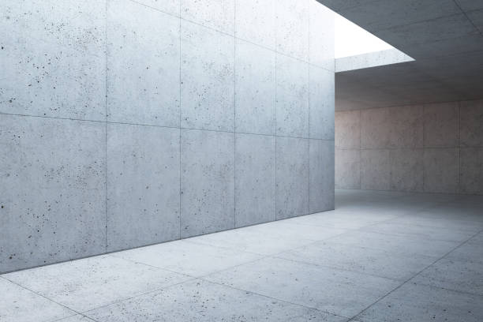
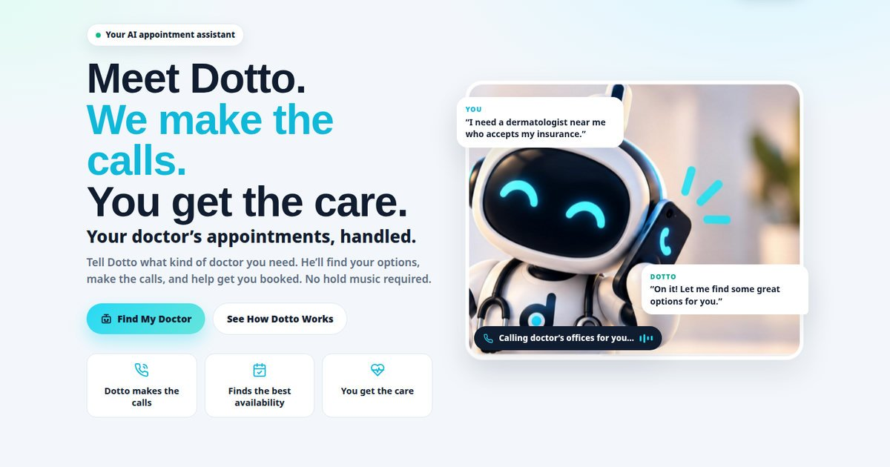
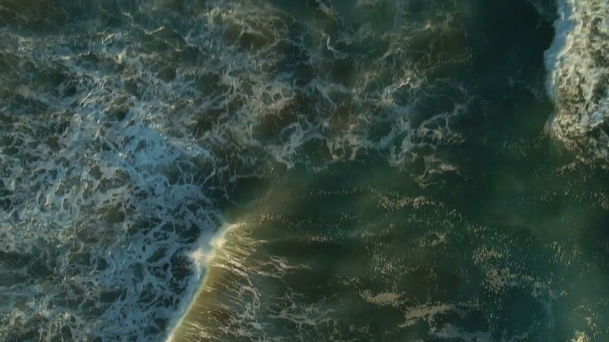
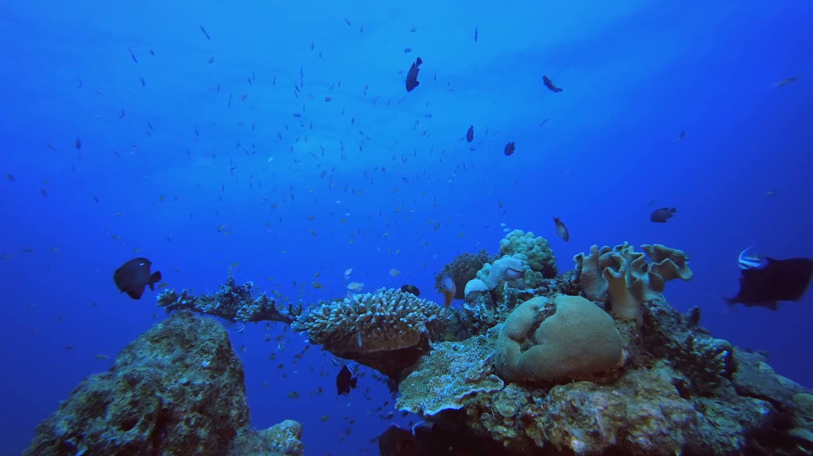
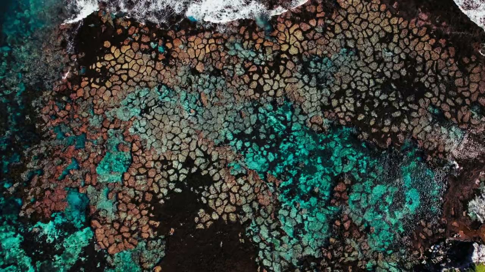

A reef system in Hawai'i — small businesses, growing together
Let’s Make WAVES.
Give the world a fresh perspective on what makes your small business special.
You bring the craft. We bring the tools to make it shine. And beside you, other good businesses doing the same — different strengths, feeding each other. Customers, referrals and encouragement flow both ways, and everyone grows a little stronger for it.
Just your name to start. Automagic interviews you — story, vibe, logo, photos — and compiles it into a vision board. Then we build your site from it, by hand.
Symbiosis, not soloRoots first, shine alwaysA reef, not a directory
Scroll — the good stuff is below
concept — restaurant
Aloha TableMenuOur StoryVisitBook a Table
Family restaurant · Est. 1987
Three generations. One unforgettable table.
Recipes perfected over decades, told properly — reserve in two taps.
Book a Table →
Tonight at the tableSeasonal specials, from the kitchen
Three generationsThe story behind the recipes
Easy to findDirections & parking, one tap
A table worth traveling forRestaurant concept — food first
next — artist
Studio UnframedView the Series
Color, at full volume.
Up nextThe Artist
Aloha Table
A table, tonight
Menu + reservations
Book a Table
Tonight at the tableSeasonal specials, from the kitchen
Three generationsThe story behind the recipes
A table, tonightMenu + reservations
Concept style 01 — Restaurant · every screen changes together
The reef idea
No reef grows alone. Neither should your business.
On a real reef, different life does different jobs — coral gives shelter, algae gives energy, cleaner fish give care — and the whole system grows stronger than any one piece alone. REEFRESH works the same way. You bring the craft and the story behind it. We bring the design, words and online home to give it shine. Beside you, other good businesses share audience, referrals and trust — and you share back. Everyone gives. Everyone grows.
You bringThe craft, the food, the care — and the story behind it all.
We bringDesign, words and an online home — plus talk story to draw it all out.
Beside youOther good businesses, giving and getting in return — sharing audience, referrals and encouragement instead of competing for the same sunlight.
1 reefOne growing ecosystem — and every project still gives a portion of proceeds to Hawaiʻi reef protection.
How a reef works · How REEFRESH works
The reef isn’t decoration. It’s the operating system.
Plainly put: a reef is different living things doing different jobs, feeding each other, and growing stronger together than any of them would alone. REEFRESH is built exactly the same way — here’s the mapping, piece by piece.
That’s the soul of this place: people to people, like fish in the sea. No fish out there survives alone — they move together, turn together, and the current that carries one carries them all. The shapes drifting behind this site aren’t decoration. They’re the point. You don’t swim alone here.
1 · Different jobs
On a reef
No species does everything. Coral builds, fish graze and clean, algae turns sunlight into food. The variety is the strength.
At REEFRESH
A restaurant feeds people. An artist makes spaces worth entering. A wellness studio restores them. Each business brings the one strength only it has — nobody has to be everything.
2 · Feeding each other
On a reef
What one species leaves behind feeds another. Shelter, food and safety circulate — nothing good is wasted.
At REEFRESH
A celebration dinner discovers the artist on the wall. An opening night needs catering — and calm beforehand. Customers, referrals and encouragement circulate between neighbours the same way.
3 · A solid base to grow on
On a reef
Coral structure is the firm base everything else attaches to, shelters in, and grows from.
At REEFRESH
We provide that base: talk story, design and words, an online home, and content, social and visual tools — something solid to grow on, and to shine from.
4 · Someone tends it
On a reef
Health is balance: light, food and space shared around, so no single species takes everything.
At REEFRESH
REEFRESH is the reef keeper: we welcome each business in, look after the tools, and help good neighbours find each other — human to human. This section is about the business ecosystem; our give-back to Hawaiʻi’s actual coral reefs is a separate commitment, further down the page.
The living reef
This is where the name comes from.
Soft light, slow currents, a whole world quietly helping each other thrive — the reef off Hawaiʻi isn't just our inspiration. It's our business model.
Press & hold to feed them — the fish notice
The reef system
A hub where businesses grow together.
Not a directory. Not a marketplace. A reef: different businesses doing what they do best, side by side, feeding each other audience, referrals and encouragement. These three are concept neighbors — illustrative examples of how it could work, not real members or clients.
Concept neighbor · Restaurant
Aloha Table
Three generations of recipes — a table people travel for.
Its strength
Warm gatherings, food with a family story behind every dish.
What it gives the reef
A place to celebrate, catered milestones, and a steady stream of “you have to try this” referrals.
What it gets
Art-filled walls from the artist next door, and calm, cared-for staff from the wellness studio.
Concept neighbor · Artist
Studio Unframed
Color at full volume — work that makes a room feel alive.
Its strength
A style entirely its own, and stories behind every series.
What it gives the reef
Art and identity for neighbours’ spaces, opening nights worth gathering for.
What it gets
Walls to hang on, tables to celebrate sales at, and quiet to recover between shows.
Concept neighbor · Wellness
Stillwater Studio
Quiet, by design — restoration for busy people.
Its strength
Calm, care, and rituals that actually restore.
What it gives the reef
Rest for tired owners and teams, and a peaceful space for small gatherings.
What it gets
Nourishing food for retreat days, and serene art that deepens the calm.
REEFRESH is the reef keeper — not another vendor.
We tend the reef: talk story, design, an online home to shine from, and — human to human — help getting good neighbours together. No live matching, no algorithm promising introductions. When you name someone you love growing beside in Talk Story, that conversation starts with a person, not a platform.
Your reef is forming — be an early coral.
Founding neighbours shape how this grows. Start with talk story, and tell us who belongs beside you.
Why shine matters
Some businesses are too good to stay unseen.
The little restaurant with unforgettable food. The shop full of things you won’t find anywhere else. Great in person — invisible online.
That’s where the reef comes in. Drag across the mockup: same restaurant, same story — now the world can actually see what makes it special.
aloha-table-restaurant.biz — home page
★ ALOHA TABLE RESTAURANT ★“Family owned & operated since 1987!!”
Welcome To Our Official Web Site!!!
Thank you for visiting the Aloha Table Restaurant website on the World Wide Web. We are a family owned and operated restaurant serving the finest food in town. Our menu includes appetizers, soups, salads, entrees, desserts, beverages and much much more. Please take a moment to browse our web pages and learn about our daily specials, our catering services, our banquet room and our gift certificates which make great gifts for any occasion.
Our hours change with the season so please call ahead. Reservations are accepted for parties of 8 or more only. For the menu please click the MENU (PDF) link at the top of this page (the file is large, please be patient while it downloads). We hope to see you soon and mahalo for visiting our website!!!
CLICK HERE FOR MORE INFORMATION >>
You are visitor No. 004812 · Best viewed at 800 × 600 · Sign our GUESTBOOK!! · Last updated March 2011
OUR FOOD IS DELICIOUS!! CALL FOR HOURS!!
★ COUPON ★ 5% OFF ONE ENTREE* *dine-in only — print this page
alohastable.com — home
Aloha TableMenuOur StoryVisitBook a Table
Family restaurant · Est. 1987
Three generations. One unforgettable table.
Recipes perfected over decades, told the way they deserve — and a table waiting for you tonight.
Book a Table →Open Tue–Sun · 5–10 pm · Reservations in two taps

Tonight at the tableSeasonal specials, straight from the kitchen
Three generationsThe story behind the recipes
Easy to findDirections & parking, one tap away
BeforeAfter
⇔
BeforeAfter
← The old siteThe REEFRESH concept →
Illustrative concept transformation — not a completed client project.
Tools to shine
Your strength, made visible.
A website is just one tool here. Inside the reef you get a home base online, shine tools for every channel, and good neighbours beside you — four kinds of help, one ecosystem.
How you grow here
First, we talk story. Then we grow from your roots.
From talk story to a home base — then growing beside others, not alone.

Cutting-edge tools, local stories
Bringing AI tools to hawAIi businesses — and keeping them cutting edge.
The newest AI tools, put to work for the small businesses that make these islands special. AI speeds up the making — the regulars, recipes and roots behind it all stay gloriously human.
More directions, sooner
Real options to choose from, early — not one template, late.
Sharper words
Copy shaped around your voice and your customers.
Layouts, tested
We try arrangements fast and keep what works — phones first.
Polish that shows
The time saved goes into the details that make people linger.
New · Automagic ✦
Meet Automagic — the interview that sets the vibe.
Automagic doesn’t build your website — we do that, by hand. What Automagic does is take a proper interview: your story, your roots, the vibe of the place, your logo, your photos. As you answer, it compiles everything into a Vision Board beside you — the pretty little thing that sets the direction. Then our team takes that board and builds your site from it. It also asks who you love growing beside, so we can talk reef neighbours, human to human.
✦ Talk story first — lore becomes brand✦ Vision Board — your vibe, compiled live✦ Logo, your way — upload, create, or we figure it out✦ Your photos — team & work, on the board✦ Reef neighbours — named by you, followed up by a human
Talk Story · The lore step
Before colours. Before pages. Your story.
Talk story isn’t an interview formality — it’s how Hawai‘i shares lore. Automagic asks these in the chat, and your answers flow straight into your Vision Board — origin, roots, chase, and the neighbours you want beside you.
What made you start this?Who taught you — what are your roots?What almost broke you?What do regulars say that you never say?What are you proud of that never shows online?Who do you love growing beside?Which local business should the world meet next?
Automagic Online — talk story with me, we’ll build your Vision Board as we go
Step 1 of 15 · The interview, about 5 minutes
This is an interview, not a site builder — Automagic compiles your answers into a Vision Board, and our team builds your actual site from that board, by hand. Everything stays in this tab: your answers, your logo and your photos are shown on your board and listed in your brief, never uploaded or stored. Download the board at the end (your logo and photos are embedded in that file) or attach the same files when you send us your brief. Links are saved for our human review — nothing is fetched live, and neighbours are never matched automatically.
Your Vision Board — sets the vibe, we build the site from it
Boom! Your Vision Board just came together ✦
Story, vibe, colours, type, logo plan, photos — and the neighbours you named. Copy or download the board and our team builds your site from it, by hand.
Your Business· Vision Board
Warm & welcoming
Tell your story, beautifully.
Answer the interview — watch this board become you.
Book Now →
＋ The story — lands on the board when you tell us what you do
＋ The #1 action — lands when you pick what visitors should do
＋ The look — colours & type land when you pick them
The logo
Not decided yetThe interview will ask: upload the one you have, have us create one, or leave it to us.
The story, in your words
Your origin, roots and regulars’ words will gather here as you talk story.
Your photos — team & work
No photos yet — the interview will offer a spot for team photos and shots of your work. Real photos of your people and your craft set the vibe better than any stock image.
Three directions for the board
Same story, three feels — tap one, the board follows. It’s a direction for us to design from, not a finished site.
Edit it in plain words
Type a tweak the way you’d say it — it’s added to your brief.
Your Vision Board brief
The text version of your board — updates as you answer, with your lore, logo plan, photo list, links and reef neighbours. Copy it, send it with your enquiry.
Your brief will appear here as you answer…
The download is one self-contained file with your board — story, colours, logo and photos included — ready to send us as-is.
Your board, piece by piece
✓ Talk story & lore — your chase, roots and regulars’ words
✓ Colours & type — the look of the board
✓ Logo — uploaded, to be created, or left to us
✓ Photos — your team and your work, on the board
✓ Your #1 action — front and centre
✓ Board ready — send it, and we build your site from it, by hand
Why talk story?Your lore is your brand. The chase and the roots are the good stuff — a form alone would miss them.
What happens next?You send us the board. We review your story, links, logo and photos, then design and build your site from it — human-led, start to finish. If you named reef neighbours, we’ll talk introductions — person to person.
Questions people ask before they start
I don’t know my colours or style yet — is that a problem?
No — that’s what talk story is for. Your lore points the way first, then you try palettes and directions on the Vision Board and pick what feels like your place. Nothing is locked in — the board is a direction, and we refine it with you when we build.
Does Automagic build my website?
No — and that’s deliberate. Automagic takes the interview and compiles your Vision Board. Then our team (a human) designs and builds your actual site from that board, so the finished thing gets real craft, not a template spat out by a form.
What about a logo?
Three ways, your pick, in the interview: upload the logo you already have and it goes straight on your board; ask us to create one — describe the vibe you want and it’s added to your project as an additional service; or leave it to us entirely and we’ll figure out a direction that fits your story. No logo at all yet is completely fine.
Can I share photos of my team or our work?
Yes — the interview has a spot for team photos and for photos of your work or portfolio, and they appear on your Vision Board so we can design around the real thing. Photos stay in this tab; they’re embedded in the Vision Board file you can download and send us, and listed by name in your brief.
I already have a website. Can Automagic use it?
Yes — drop the link when Automagic asks for links, plus Google or Facebook if you have them. They’re saved in your brief for our review when we build.
What do I actually need to get started?
Your business name, one line about what you do, and a story or two. Talk story does the rest — about five minutes. Logo and photos are optional; you can always send more later.
Does Automagic put me in touch with other businesses automatically?
No. If you name who you love growing beside, that goes in your brief for a human follow-up conversation. There’s no live network or automatic matching yet — the reef is forming, and early members shape it.
What happens after I finish the interview?
Send us your Vision Board — copy the brief into your enquiry on the Contact page, or download the board file and send that. We take it from there: we review your story, logo and photos, then build your site from the board. And if you named neighbours, we’ll talk about connecting you, person to person.
Why REEFRESH?
Stronger together, by design.
Symbiosis is the model — we grow by feeding each other, not by going it alone. You bring the craft and a place people love to gather. We bring talk story, design and an online home to make it impossible to miss. Neighbours send new faces through your door, and you send yours through theirs. Nobody has to be everything.
We don’t reinvent who you are. We give the world a fresh perspective on who you are.
Our work · Real references
Real brands. Real sites.
These four are real — brands and sites Ian has helped build, presented here as references in REEFRESH’s own name. Each card says what the brand actually is, and nothing it doesn’t: no invented results, no borrowed claims.
Concept explorations
Style concepts — illustrative only.
The three builds below are concept designs — illustrative businesses showing design directions and how different strengths could feed each other in the reef. They are not real members, clients, or completed projects; the real work is above.
Picture the world meeting you here.
That pause — the oh, this is good feeling — is a fresh perspective doing its work. A home base you can’t wait to share, in a reef that shares you back.

Born in Hawaii · Inspired by everywhere
About REEFRESH
Reef keeper by nature. Guide by design.
Born in Hawaii, inspired by how a reef actually works — many different lives, each doing what it does best, all growing stronger together. REEFRESH tends that system for small businesses, with good neighbours beside you.
Get curious. Find the roots. Help it shine — together.
Our impact
Good work goes back to the reef.
A healthier reef of businesses and a healthier reef offshore aren’t separate stories here — care compounds in both. Every business we help shine gives back: a portion of proceeds from every project supports the protection and restoration of Hawaiʻi’s coral reefs. The ocean gives REEFRESH its eye and its model — giving back to it is just part of being REEFRESH.

The reef that inspires the work
Built into every project
A portion of every project’s proceeds goes to reef protection and restoration in Hawaiʻi. No add-on, no upsell.
Why Hawaiʻi’s reefs
Reefs shelter marine life, soften the surf on our shores, and are woven into island life. When the reef thrives, the island does too.
Partners, in progress
We’re exploring partnerships with local conservation organizations — when one is finalized, we’ll name it here.
It never changes what a project costs or includes. Supporting the reef is on us.
You’ve built something special. Let’s show the world.
Tell us your story — and who you love growing beside. It starts with talk story, not a commitment.
Services
Tools to help you shine & grow.
Four kinds of help inside the reef — brand and story first, a website as your home base (not the whole company), shine tools, and human connection. No guaranteed rankings, no inflated promises. Every journey: Talk Story → Find Your Roots → Build & Shine → Grow in the Reef.
Not sure where you fit in the reef?
Tell us your story — we’ll recommend the smallest right step. No pressure, no jargon.
Our work · Real references
Made to be seen.
Real first. Bubbaloha, Bloomin’ Genius, Set in Stone and Dotto are real brands and sites Ian has helped build — presented here as REEFRESH references, with only what’s known about each one and no invented metrics, testimonials or outcomes. Below them, our concept explorations stay clearly labeled as concepts, so what’s real and what’s illustrative is never blurred.
References · Real work
Brands Ian has helped build.
Four real brands, four real sites — the references behind REEFRESH, in REEFRESH’s own name.
Concept explorations
Concept designs — illustrative only.
Three illustrative businesses showing design directions and how different strengths could feed each other in the reef. Labeled honestly: not completed client projects, not real members, no invented clients or results.

Imagine your place in the reef.
Your business, in the reef — given a fresh perspective the world can feel. It starts with talk story.
About REEFRESH
We see the extraordinary in the everyday.
The most interesting businesses aren’t the biggest or loudest — they’re built with genuine passion and care. REEFRESH exists to help them say so, shine, and grow together — a reef system, not a solo website shop.
The stories that interest us
The family restaurant that perfected its recipes over generations. The artist with a style entirely their own. The entrepreneur who decided to do it differently.
Sometimes that magic doesn’t translate online, and each business ends up growing alone. We change both: not just what you sell, but who you are, why people should care — and who you grow beside.
The makers. The dreamers.
What guides every project
Born in Hawaii. Inspired by everywhere.
Our eye comes from Hawaii — the movement of water, organic forms, color that shifts all day. Great stories aren’t limited by geography, and neither are we.
Our mission: pull out what makes each great small business special, build its home, help it grow beside good neighbours — and give a little back to Hawaiʻi’s literal reefs along the way.
Contact
Every great project starts with a conversation.
Tell us your story, what makes it special, and who you love growing beside.
A few honest notes
Talk story, no pressure
This starts as talk story, not a sales funnel. Share your roots and your neighbours — if we’re not the right fit for your reef, we’ll say so.
Based in Hawai'i, growing a reef everywhere
REEFRESH is an independent reef system based in Hawai'i, working with businesses near and far.